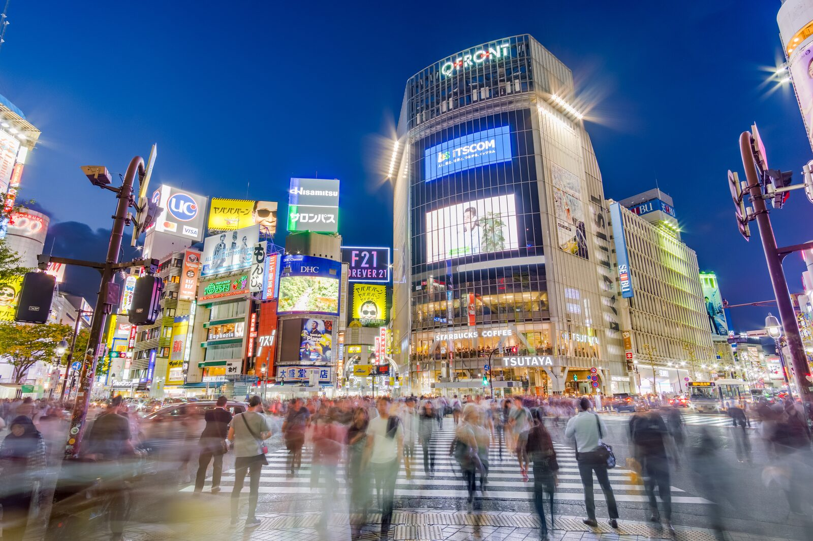

18 places. No filler. Tap anything for the full take, save what sticks, and use this as the running plan once you land.
The ideal arc from morning to late night. Every stop here is in the full list below — tap to see more.
Hit the star on any card. Your shortlist lives here — pull it up when you're deciding where to go next.